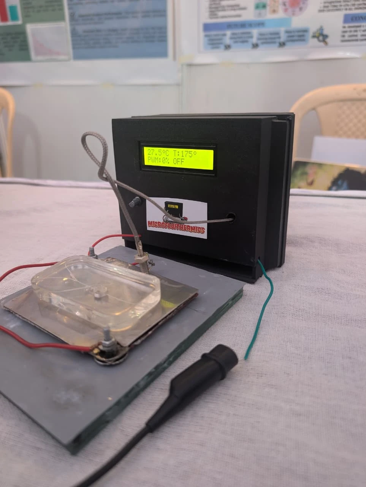
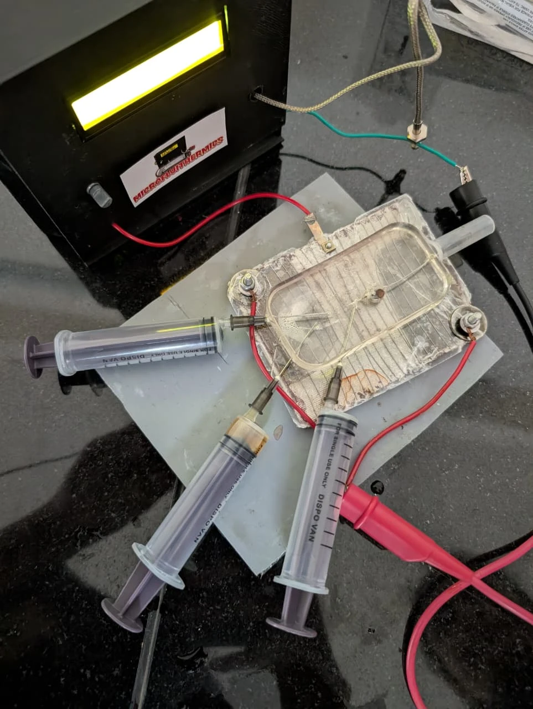

Blood separation for a rural clinic. No electricity needed.
I model how fluid flow, channel geometry and surfaces decide what a microfluidic device can separate or detect, then build the device on a bench in Pune for a few hundred rupees.
My sole-author transport study, under review at Microfluidics and Nanofluidics.
A patient sample is small. Flow it fast and each molecule has less time to reach the surface; flow it slowly and part of the sample is never used. I formulated and solved the convection–diffusion–reaction problem to find the balance.
Slower and part of the sample is left unused; faster and each molecule spends less time near the sensor. The kinetic ceiling then decides how much of what passes is caught.
Each started as one design, failed, and became a better one.
Carbon-dot synthesis kept failing on a hot plate, so I built a heater a PDMS chip can sit on: a nichrome element under the chip, thermocouple feedback, and Arduino PID control in a boxed controller with a live display of temperature, set point and heater power.
The chip's syringe-fed inlets let reagents flow while the stage holds temperature. I characterised, calibrated and insulation-tested it to improve response time and energy use.


Conventional centrifuges need power and upkeep that rural clinics lack. We built two that need neither: a ₹300 hand-held thread-driven centrifuge spun by string tension, and a ₹2,000 tabletop centrifuge whose rotor spins on NdFeB magnetic levitation. Blood in heparinized capillaries, held in a custom PDMS chip to avoid cross-contamination, separates by density as it spins.
A phone fitted with a microfluidic lens then images the sample, and our app returns blood counts and flags. Building them showed me the gap: density is a shadow of sickle-cell disease. The defining change is mechanical.
Integrated plasma separation from whole blood, anti-nucleoprotein capture and a gold-nanoparticle colorimetric readout, scored by a smartphone.
Sandwich ELISAs for p-tau217 and NfL at pg/mL in human plasma. I designed a glutaraldehyde-free EDC/sulfo-NHS route on polystyrene, fought non-specific binding, and built a prototype assay cartridge with optical-microfluidic imaging.
Sappan-wood quantum dots in a PDMS lens for slow, diffusive, fluorescence-trackable ocular drug release. Lenses fabricated; drug loading in progress.
In curved microchannels, inertial lift and Dean flow push cells to equilibrium positions that depend on size, shape and stiffness. I want to test whether sickled and healthy cells end up far enough apart, reproducibly enough, to separate them, when sickling changes with oxygen and from one patient to the next.
The answer may be no. I would rather find that out honestly, against density-based separation, than assume mechanics is better.
Proposed research direction · graduate studyMicroscale fluid mechanics and mass transport, dimensionless scaling, closed-form approximations, finite-difference and FEM (COMSOL), Monte Carlo
Soft lithography, photolithography, PDMS devices, microfluidic chip design
PID control, thermocouple feedback, Arduino, ESP; SolidWorks, AutoCAD
EDC/sulfo-NHS coupling, sandwich ELISA, 4PL curves, microscopy, DLS, zeta potential, FTIR, contact angle
Python (NumPy, SciPy), C++, image processing
B.Tech Bioengineering, MIT-ADT University, Pune (2027). Applying to graduate programs for Fall 2027.
ananya.sharma.pune@gmail.com